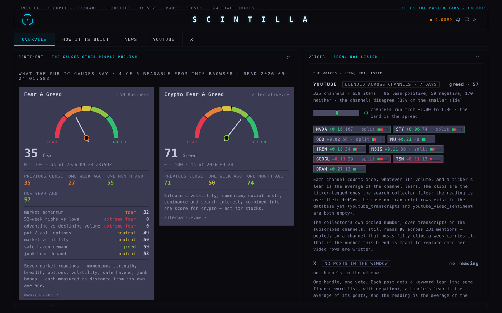
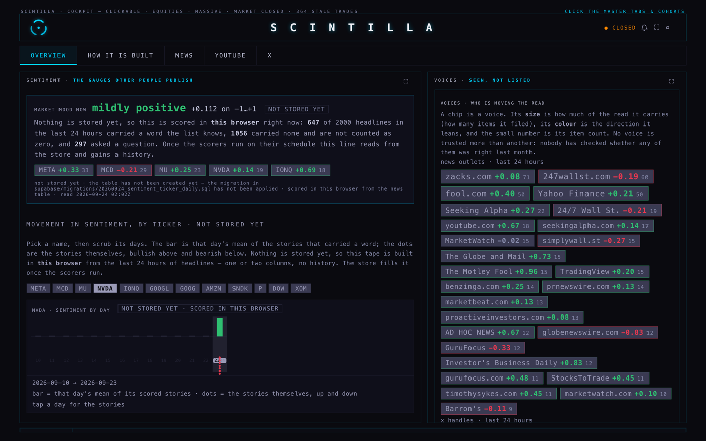
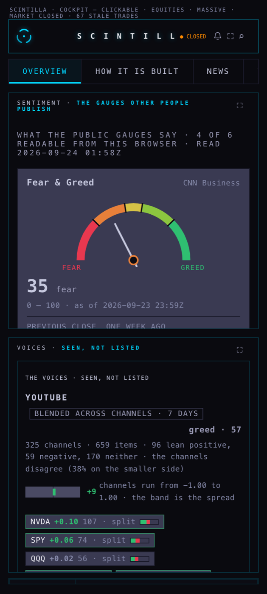
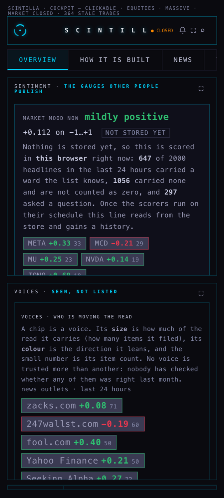
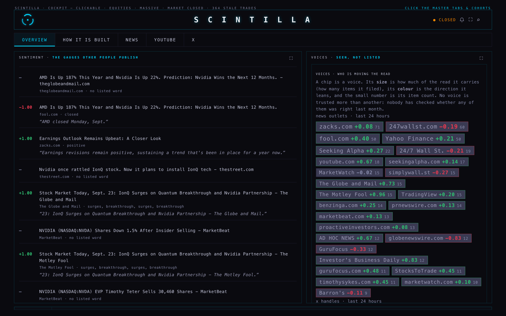
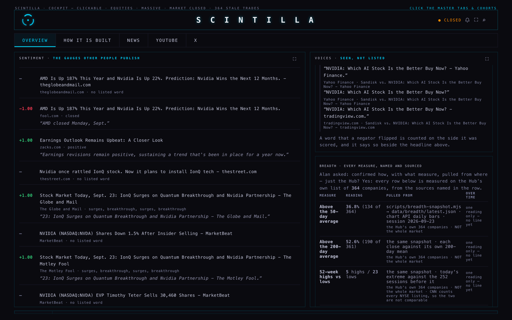

24 SEP 2026 · LANE M41 · BRANCH hub/sentiment-5-20260924
The sentiment room used to describe itself. It now shows a reading, the days behind
it, the stories that made it and the words inside those stories — and, for the first time, it is
built to keep them.
You said it plainly: "this is awfully like a specs file not an actual sentiment system",
"it says everywhere that nothing was stored why?? we should store and track", and
"theres a timeline per ticker a like movement in sentiment by ticker". This is that work.
Nothing here has been deployed and nothing has been scheduled — the code is on a branch and the
database changes are written as migrations for the coordinator to apply.
THE ROOM, BEFORE AND AFTER

Before · 1680 wide. Six published gauges, then a table of thirteen inputs, then
three paragraphs about each voice. Every panel is a description of a method. Nothing on the screen
is a reading you can follow through time, and nothing is stored.

After · 1680 wide. The room opens with one read in words — mildly
positive, +0.110 — with the five names that moved it. Under it: pick a ticker, scrub its days.
On the right, the voices that are actually carrying the read, as chips sized by how much they filed.
The gauges and the measuring stick are still there, below.

Before · 390 (phone). The same wall of prose, one column wide.

After · 390 (phone). The read is the first thing on the screen, the ticker buttons
wrap, and the tape scrubs with a finger. NVDA is picked here; the green bar is yesterday, the faint
ticks are days with no story scored for that name.
THE STORIES BEHIND A DAY

Tap a day on the tape and you get its stories: the score, the publisher, the exact words
that fired, and the sentence the word was said in. A headline with no word from the list gets a
dash — never a zero. "Earnings Outlook Remains Upbeat" scored +1.00 on the word
positive, and the sentence is printed underneath so you can disagree with it.
KEYWORDS, AND WHERE THEY WERE SAID · BREADTH, NAMED AND SOURCED

Top: a keyword has been tapped, and every sentence it appeared in is listed with the
outlet and the headline. Bottom: the breadth table you asked for — each measure, its reading, where
it was pulled from, and its line over time. Today it reads 36.8% above the 50-day (134 of 364) and
5 new highs against 23 new lows, from scripts/breadth-snapshot.mjs on session
2026-09-23, over the Hub's own names — not the market.
WHY NOTHING WAS STORED, AND WHAT CHANGED
The scoring code existed. It was written to run as a script on this Mac, and it needed the
database's master key copied onto the Mac to write anything. That key move was never approved, so the
scripts never ran, and every sentiment table stayed at zero while 491,216 headlines piled up.
The fix, in one sentence
The scorers now run inside Supabase as edge functions on a schedule: the platform hands the key
to the function, the function writes the rows, and no person and no laptop ever holds the key.
THE TABLES
Four database changes, all additive — new tables and new nullable columns, nothing dropped,
renamed or overwritten. Each migration file carries its own exact rollback. Counts below are what I
measured through the public read endpoint at 03:45Z on 24 Sep, before anything was applied.
table
what one row is
rows now
after the backfill
news
a headline the collector caught (this already existed)
491,216
unchanged — it is only read
news_headline_sentiment
one headline scored: the score, every word that fired, the sentence around each word, the publisher, the time
0
one per (headline, ticker) — up to ~491,000, newest first
sentiment_ticker_daily
one ticker, one day, one voice: score, how many items, how many bullish and bearish, and the top keywords with a sentence
table not created yet
the timeline's own table — one row per name per day
x_post_sentiment
one X post scored, with the handle that wrote it
table not created yet
fills on the collector's next published feed
sentiment_backfill_state
where the backfill got to, so it can continue instead of starting over
table not created yet
one row
youtube_video_sentiment
one clip, one ticker: the lean taken around that ticker's mentions
0
from 11,337 stored clips
I could not run the backfill, so I am not going to print row counts as if I had. Applying
migrations and deploying functions is the coordinator's step. Once it has run, the room itself is the
check: every panel that says "not stored yet" today will say stored, with the number of
days behind it, and sentiment_backfill_state will show how far back it has reached.
THE BACKFILL
There are nearly half a million headlines. One run cannot score them and should not try — a job
that dies halfway and restarts from the top never finishes. So the backfill walks newest first, in
slices of 1,500, and writes where it stopped. The next run continues from there. Nothing is ever
scored twice: a filing that already has a row is skipped.
ONE TICKER'S TIMELINE · NVDA
The screenshots above are NVDA, taken against the live database with nothing stored yet. What
that means honestly:
the tape runs over 14 days, so the gaps are visible; only one column has a reading,
because the only headlines this browser can score itself are the last 24 hours;
that day's reading came from 30 stored stories in the window, 17 of which carried a sentence
— printed underneath each headline;
the words on the day were opened to their sentences: four different outlets wrote
"NVIDIA: Which AI Stock Is the Better Buy Now?", which is why the same word repeats.
Once the scorers have run for a fortnight, that same tape carries fourteen real columns, the
bars move, and the dots are the stories on each day. That is the whole point of storing it.
THE CRON JOBS · WRITTEN, NOT SCHEDULED
All four are in supabase/migrations/20260924_sentiment_cron.sql. They are written
down; I did not schedule them, and the file contains no key — it reads the bearer from the
database's own vault by name, the same way the earnings job already does.
job
how often
what it does
sentiment-news-10m
every 10 minutes
scores the newest headlines and rebuilds the days it touched
sentiment-news-backfill
every 5 minutes
walks backwards through the 491,216, resuming each time. Unschedule it once its state row says done — it is the only job meant to end
sentiment-youtube-6h
every 6 hours
one reading per clip per ticker, taken from the words around each mention
sentiment-x-2h
every 2 hours
scores the posts the collector has already published
ONE MEASURING STICK, WRITTEN DOWN
News, YouTube and X are now scored by the same file — not three copies of a similar idea.
In plain words, the rules it follows:
One item, one vote. A headline, a clip and a post each count once; no outlet and no handle is given extra weight.
A score is a balance, not a count: positives minus negatives, divided by how many words fired. The dictionary has 2,355 negative words against 354 positive, so counting hits would drift gloomy on ordinary text.
Silence is not neutral. An item with no word from the list gets no score at all, and is reported separately.
A question is not a claim. "Is NVDA about to crash?" is scored and shown, then left out of every total.
A negator flips the word it precedes, and the flip is stored on the word so you can check it.
A ticker's day is the average of its own scored items, and names are not equalised: a heavily covered name moves the market read more, because it is more of the news.
IS IT A NEWS-DRIVEN MARKET?
You asked how to parametrize that. The room now has a place for exactly one number: how much of a
day's move in the names that had news is explained by what that news said. It currently refuses to
print a number, and says so: "needs 9 more stored days and 199 more ticker-days before this
number means anything". That refusal is deliberate — a correlation over one day of one ticker is
worse than no number. Ten stored days and two hundred ticker-days from now, it fills itself in, with
its sample size printed beside it, and it will still say it is a co-movement and not a cause.
WHAT COULD BE WRONG
The dictionary does not understand context. In the screenshot above, a headline scored
−1.00 purely because its snippet said "AMD closed Monday, Sept." —
"closed" is a negative word in a dictionary built from company filings. The sentence is printed
beside the score, so you can see the mistake; that is the best this method can do.
It reads headlines, not articles. It cannot hear irony, sarcasm or a hedge, and a headline
written to be clicked scores like one written to inform.
The same story arrives from many outlets and is counted once per outlet, so a widely
syndicated piece weighs more than a single scoop. That is a defensible choice, not a neutral one.
Questions are caught only when the question mark is there.
YouTube has no transcripts stored (0 rows). Until it does, a clip is scored on its title
and the row says title in sample_src. A title is an advertisement.
X stores nothing until the collector publishes. When the feed is unreadable the function
writes nothing and records that it was unreadable — a quiet feed is never reported as a calm market.
Breadth is the Hub's own list. The brief said 316 companies; the measured snapshot on
session 2026-09-23 says 364 names (361 with enough history for a 200-day average). Either way
it is our list, not the market, and every row says so.
Nobody has checked whether any voice was ever right. A reliable outlet and a noisy one
count the same.
The screenshots were taken locally, against the live database, with the browser's
cross-origin check relaxed so the price API would answer — the room reads the same rows either way,
but this is a local render, not the deployed site.
Nothing here proves the functions run. They are written and tested offline; whether they
score correctly against the real tables can only be seen after the coordinator deploys them.
WHAT I DID NOT DO
No deploy, no push, no database change applied, no cron scheduled.
No key copied, printed or committed anywhere — the functions read theirs from the platform.
No change to the published gauges, the measuring-stick table, the lexicon, the saved Equalizer
or any other room.
No browser was opened where you could see it: every screenshot was taken headless, and every
browser this work started was closed before it finished.
The two test failures that already existed on production still exist; I did not touch them.
Tests: 546 run, 542 pass, 2 skipped, 2 fail — the same two
that fail on production today (xfeed-publish and the age-function rule). 25 of those tests
are new and cover the store, the scorers and this room.